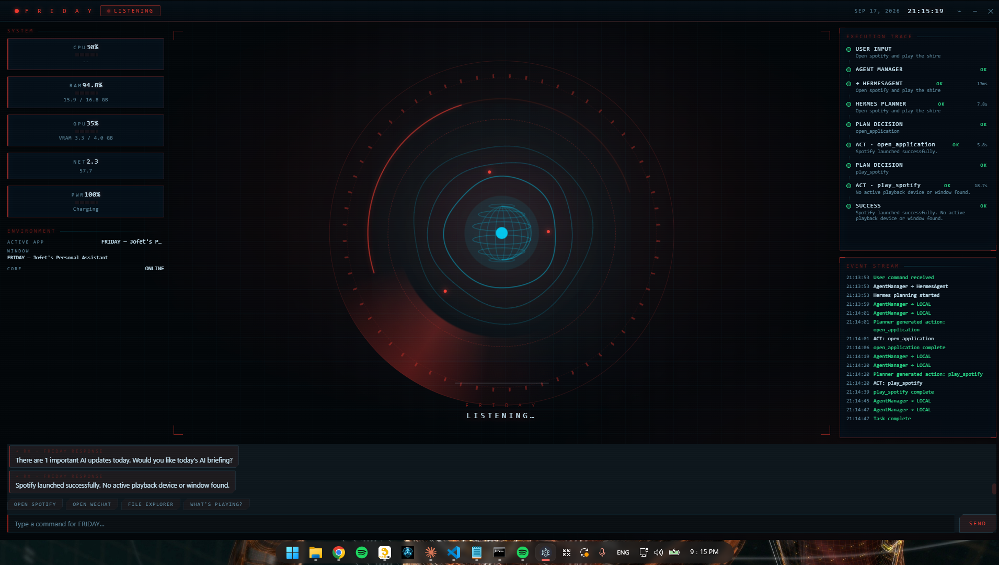
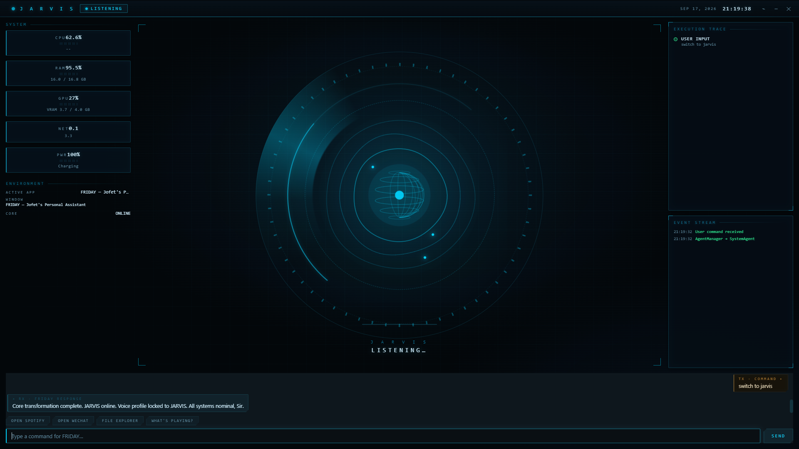
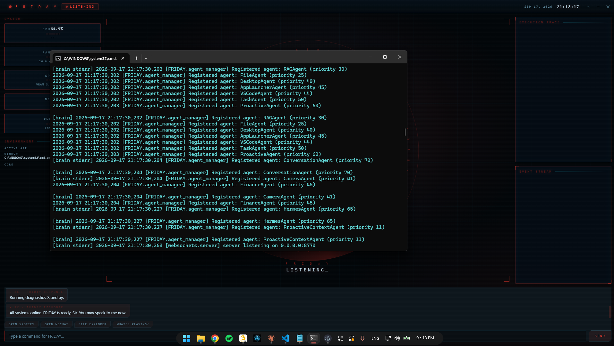
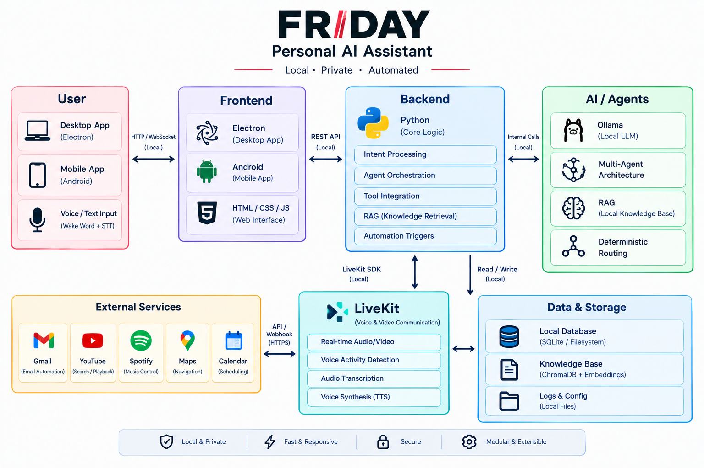
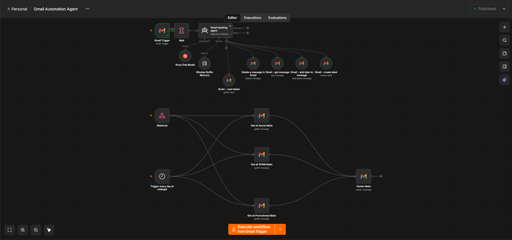
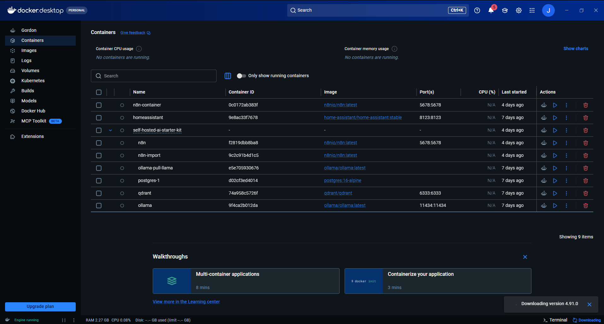

Building intelligent systems. Computer Science student focused on AI engineering, software engineering, and automation - currently building FRIDAY, a local, multi-agent personal AI assistant.
I build things end-to-end and rebuild them when they don't hold up. FRIDAY, my primary project, started as a simple idea - an assistant that could actually act on my computer - and grew, through repeated rewrites and debugging, into a 35,000+ line multi-agent system that now runs almost entirely offline.
Outside of engineering, I lead and direct a band as freelance work, and occasionally guide Indonesian visitors around China. Both involve the same underlying skill as debugging a live system: coordinating moving parts toward one outcome, in real time, with no do-overs.
I'm looking for an internship in AI engineering, software/backend development, QA and test automation, or DevOps - somewhere I can keep building and debugging real systems rather than just calling an API and moving on.
A local, multi-agent AI assistant - designed, built, and rebuilt solo. Runs a local LLM, routes commands deterministically across specialized agents, and automates real tasks through n8n and Docker.

[FRIDAY MAIN GUI]What to capture: The Electron interface running live, in its normal idle or active state.

[FRIDAY MAIN GUI]What to capture: The Electron interface running live, in its normal idle or active state.
AI assistants can understand language, but turning a natural-language request into a reliable action takes more than an LLM on its own.
Deterministic command routing, specialized agents, a local model for open-ended requests, and automation workflows for the actions that follow.
A single pipeline carries a request from voice input to a completed action - shown below.

[AGENT ROUTING / DISPATCH LOG]What to capture: A debug or log view showing the AgentManager routing a command to a specific agent.
Only components actually part of the current implementation are shown here. The full architecture diagram below is a placeholder for a formal version to be produced separately.

[FORMAL ARCHITECTURE DIAGRAM - TO BE PROVIDED]A polished, hand-produced diagram of the real system will go here once created. It should reflect exactly the components listed above - nothing added for visual completeness.
Known commands are matched and routed directly by the AgentManager; the local model is only invoked when nothing matches - keeping everyday actions fast and predictable while still handling open-ended requests.
STT and TTS originally ran through the Google Speech API and edge-tts. Both were replaced with faster-whisper and Piper so the core voice loop no longer depends on an internet connection.
As FRIDAY's feature set grew, a single script became hard to extend and debug. Splitting responsibilities across seven agents behind a central dispatcher made each piece easier to reason about and modify independently.

[n8n AUTOMATION WORKFLOW]What to capture: A real n8n workflow canvas used by FRIDAY for an actual automation.

[DOCKER / CONTAINER SETUP]What to capture: Terminal output or a docker-compose file showing FRIDAY's containerized components running.
Integrations include Spotify, YouTube search, Bluetooth control, Gmail automation, WeChat automation, and a plugin system covering weather, news, timers, jokes, and calendar. Performance benchmarks (latency, resource usage) will be added once measured.
FRIDAY began as a single script handling commands directly.
Rebuilt around the AgentManager and seven specialized agents (late June 2026), making the system far easier to extend.
Replaced cloud-based STT/TTS with faster-whisper and Piper.
Added support for Indonesian.
Integrated a free OpenStreetMap stack with a Leaflet.js map panel in the Electron GUI.
Started a mobile companion app, extending FRIDAY beyond desktop.
Rebuilding FRIDAY's architecture showed how expensive it gets to keep extending a system that wasn't designed to be extended - and how much a clear dispatch layer simplifies adding capability later. Moving the voice pipeline offline was a real lesson in trading a small amount of quality for independence from external services, cost, and latency.
Next: a clean, documented public GitHub repository, automated tests around the agent routing logic, and measured performance benchmarks instead of relying on scale alone as evidence.
A mobile companion app extending FRIDAY beyond desktop.
A Java-based student management application for organizing and managing student information through an application interface connected to a SQL database.
A web-based Tic-Tac-Toe game developed as a team project to implement game logic, interactive user input, and a responsive browser-based interface.
Applied and integration-focused - not model training or fine-tuning.
Leads and directs a band, managing rehearsals and live performances. Placed 1st in a school-level competition as band leader.
Guides Indonesian visitors around China, coordinating logistics and communication across Indonesian, English, and Mandarin.
Led a class team project, coordinating teammates and taking ownership of overall direction and delivery.
Regularly helps classmates work through coursework and coding problems.